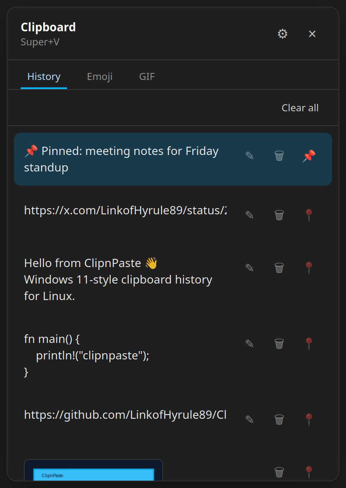
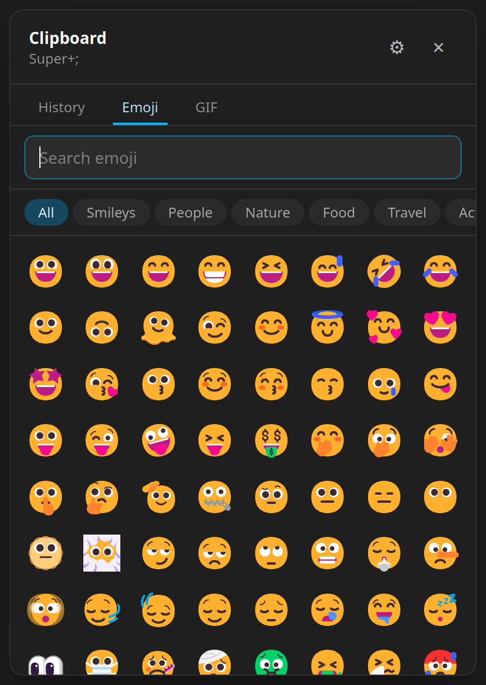
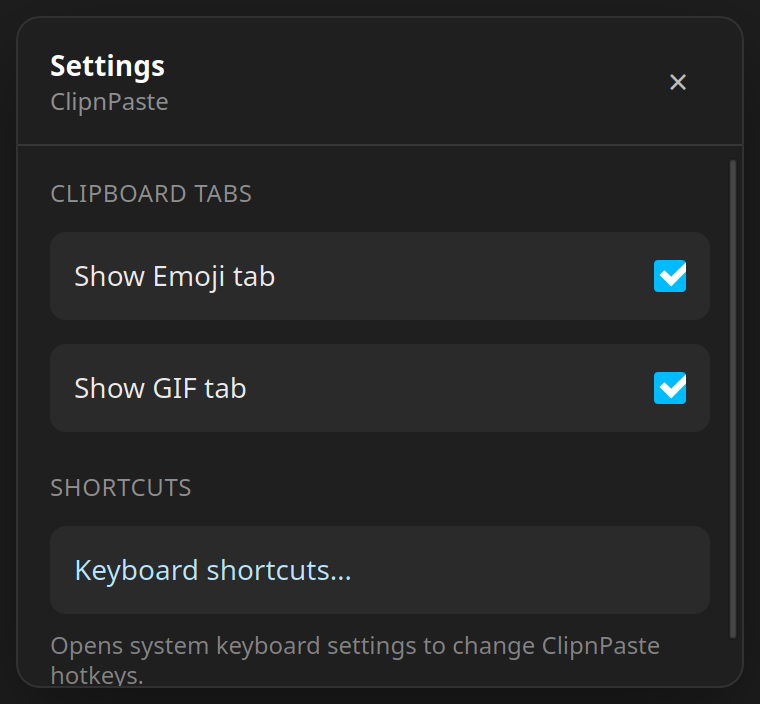
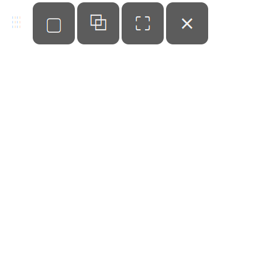

Windows 11-style clipboard history and snipping for Linux Mint / Debian (amd64).




Source on GitHub · package name clipn-paste
curl -fsSL https://linkofhyrule89.github.io/ClipnPaste/install.sh | sudo bash
echo 'deb [arch=amd64 trusted=yes] https://linkofhyrule89.github.io/ClipnPaste stable main' \ | sudo tee /etc/apt/sources.list.d/clipnpaste.list sudo apt update sudo apt install clipn-paste
pkill -x clipnpaste 2>/dev/null || true sudo apt remove clipn-paste sudo apt purge clipn-paste sudo rm -f /etc/apt/sources.list.d/clipnpaste.list sudo apt update